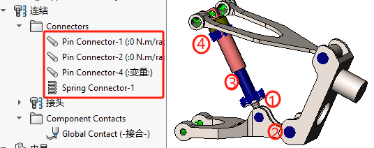
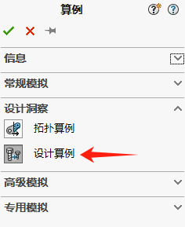

Simulation-设计算例
在日常设计过程中，往往是用–系列的数值来试验，然后确定-个最优的数值，当这个时候，如果每个案例确定一个数值的话，就需要做很多案例，这样就很麻烦，
SolidWorksSimulaton提供了一个很方便的功能解决上述的问题，就是【设计算例】功能，通过连接某一组数值，自动计算这组数值的分析结果，降低重复性工作的次数，以方便设计人员对最优数据的选择并且节省时间。
步骤:
1、指定参数(设计变量):载荷、几何特征、材料常数等
2、建立带情形数值的设计情形
设计情形的结果:
1、对每个设计情形，只保存装配体全局极值、选定顶点的应力、位移、应变
2、对最后一组，保留整个模型的全部结果，并图解显示
案例分析
分析目标:调节底座臂的厚度，并寻求最优值(利用设计情形表示四种运行工况)
汽车静止(-225N Vertiacl.0N Lateral)
在平滑路面上以恒定加速度行驶(185N Vertiacl.60N Lateral)
在颠簸路面上行驶(385N Vertiacl,72N Lateral)
在平滑路面上行驶，然后爬斜坡(900NVertiacl,115NLateral)
新建算例
•打开装配体“suspension.sldasm”
•指定材料：合金钢
•定义夹具：固定铰链
连结
在本次案例模型里，已事先定义好了销钉连结和弹簧效果。
1、销钉连结
2、销钉连结
3、导柱销钉连结
4、弹簧连结
夹具
载荷
网格
本算例已设定好网格控制，直接选择【生成网格】，确定即可。
运行
运行算例，运行过程会出现有大位移的提示，我们选择“否”进行计算。

设计算例-载荷
变更【仿真条件变量】的方法，进行设计算例。本次是设计算例需要计算4种工况：
- 汽车静止(垂直-225N.水平0N)
- 在平滑路面上以恒定加速度行驶(垂直185N.水平60N)
- 在颠簸路面上行驶(垂直385N,水平72N)
- 在平滑路面上行驶，然后爬斜坡(垂直900N,水平115N)
载荷链接变量
变量视图
变量
约束
设计算例的约束里，可以通过添加“传感器”监视软件分析过程中结果变量数值。

表格视图
在表格视图里显示了由变量组合的16种分析条件，但本次我们只算如下几种即可；（这里忽略，直接下一步【运行】）即可。
1、Vertical：-225N；Lateral：0N
2、Vertical：185N；Lateral：60N
3、Vertical：385N；Lateral：72N
4、Vertical：900N；Lateral：115N
因为我们没有设置设计算例的【目标】，因此在运行前，先取消“优化”勾选项。这样我们才能进行【运行】算例操作
要执行优化，您选择将变量定义为范围或目标，则程序会自动激活优化设计算例。 在多数情况下，都是使用变量视图选项卡来设置优化设计算例的参数。
结果视图

设计算例-尺寸
变更【模型尺寸变量】的方法，进行设计算例
变量视图
点击此处添加变量
在参考编辑窗口里添加变量
结果视图
查看结果变化趋势
在模型中，当摆臂的厚度为4mm时，应力低于材料的屈服强度。这是保证材料不受永久损坏所需的最小厚度。